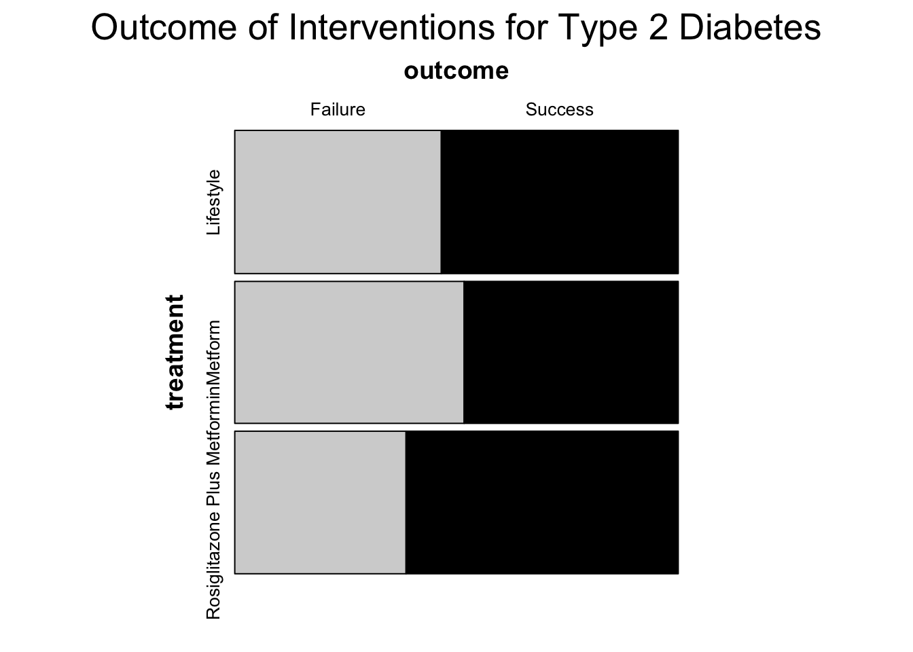

# install.package("openintro")
# install.package("gtsummary")
# install.packages("rstatix")
# install.packages("vcd")
# install.package("tidyverse")17 Chi-Squared Independence
What it is and how to run it
17.1 Introduction
The Chi-square test of independence (also known as the Pearson Chi-square test, or simply the Chi-square) is one of the most useful statistics for testing hypotheses when the variables are nominal. It is a non-parametric tool that does not require equality of variances among the study groups or homoscedasticity in the data.(mchugh2013?)
Being a non-parametric test tool, Chi-square test can be used when any one of the following conditions pertains to the data:(mchugh2013?)
Variables are nominal or ordinal.
The frequency count is >5 for more than 80% of the cells in a contingency table.
The sample sizes of the study groups may be of equal size or unequal size but samples do not have equal variance.
The original data were measured at an interval or ratio level, but violate one of the following assumptions of a parametric test:
The distribution of the data was seriously skewed or kurtotic.
The data violate the assumptions of equal variance or homoscedasticity.
For any reasons , the continuous data were collapsed into a small number of categories, and thus the data are no longer interval or ratio.(miller1982?)
17.2 Assumptions(mchugh2013?)
The data in the cells should be frequencies, or counts of cases rather than % or some other transformation of the data.
The levels (or categories) of the variables are mutually exclusive.
Each subject may contribute data to one and only one cell in the χ2. If, for example, the same subjects are tested over time such that the comparisons are of the same subjects at Time 1, Time 2, Time 3, etc., then χ2 may not be used.
The study groups must be independent. This means that a different test must be used if the two groups are related. For example, a different test must be used if the researcher’s data consists of paired samples, such as in studies in which a parent is paired with his or her child.
17.3 Hypotheses
Null Hypothesis (H0): Outcome variable is independent of type of exposure variables. There is no significant difference in the association of group A/B with outcome variable.
Alternate Hypothesis: (H1) Outcome variable varies significantly depending upon the type of exposure variable. There is a significant difference in the association of group A/B with outcome variable.
17.4 Chi-Squared Independence Test Equation
\(\chi^2 = \sum \frac{{(O_{ij} - E_{ij})^2}}{{E_{ij}}}\)
Where:
- \(\chi^2\) The Chi-Squared test statistic.
- \(\sum\chi^2\) Formula instructions to sum all the cell Chi-square values.
- \(O_{ij}\) Observed (the actual frequency in each cell (i, j) of the contingency table.
- \(E_{ij}\) Expected frequency in cell (i, j) calculated below.
- \(\chi^2{i-j}\) i-j is the correct notation to represent all the cells, from the first cell (i) to the last cell(j).
Calculating Expected Value
\(E = \frac{M{r} * M{c}}n\)
Where:
- \(E\) represents the cell expected value,
- \(M{r}\) represents the row marginal for that cell,
- \(M{c}\) represents the column marginal for that cell, and
- \(n\) represents the total sample size.
17.4.1 Formula Description
The first step in calculating a χ2 is to calculate the sum of each row, and the sum of each column. These sums are called the “marginals” and there are row marginal values and column marginal values.
The second step is to calculate the expected values for each cell. In the Chi-square statistic, the “expected” values represent an estimate of how the cases would be distributed if there were no effect of exposure variables.
Then third step is to compute the \(\chi^2\) with above formula.
17.5 Performing Chi-Squared Independence Test in R
The first step is to load the required packages that will allow us to conduct the test statistic.
library(openintro) # for dataLoading required package: airportsLoading required package: cherryblossomLoading required package: usdatalibrary(gtsummary) # for tables
library(vcd) # for mosaic plotLoading required package: gridlibrary(rstatix) # for post hoc tests
Attaching package: 'rstatix'The following object is masked from 'package:stats':
filterlibrary(tidyverse) # for data wrangling and visualization── Attaching core tidyverse packages ──────────────────────── tidyverse 2.0.0 ──
✔ dplyr 1.1.4 ✔ readr 2.1.5
✔ forcats 1.0.0 ✔ stringr 1.5.1
✔ ggplot2 3.5.1 ✔ tibble 3.2.1
✔ lubridate 1.9.3 ✔ tidyr 1.3.1
✔ purrr 1.0.2 ── Conflicts ────────────────────────────────────────── tidyverse_conflicts() ──
✖ dplyr::filter() masks rstatix::filter(), stats::filter()
✖ dplyr::lag() masks stats::lag()
ℹ Use the conflicted package (<http://conflicted.r-lib.org/>) to force all conflicts to become errors17.5.1 Data Source
The openintro package contains data sets used in open-source textbooks such as Introduction to Modern Statistics (1st Ed). (mineçetinkaya-rundel2023?) It is often used for teaching purposes and create examples for how to run various test statistics and functions using R. This package can be installed using the install.packages("openintro") feature. You can also find more information about this package here.
For the purposes of this presentations we will be using the diabetes2 dataset found within this package.
In the data there are 699 diabetes patients. Each of the 699 patients in the experiment were randomized to one of the following treatments: (1) continued treatment with metformin (coded as met), (2) formin combined with rosiglitazone (coded as rosi), or or (3) a lifestyle-intervention program (coded as lifestyle).Three treatments were compared to test their relative efficacy (effectiveness) in treating Type 2 Diabetes in patients aged 10-17 who were being treated with metformin. The primary outcome was lack of glycemic control (or not); lacking glycemic control means the patient still needed insulin, which is not the preferred outcome for a patient.(todaystudygroup2012?)
str(diabetes2)tibble [699 × 2] (S3: tbl_df/tbl/data.frame)
$ treatment: Factor w/ 3 levels "lifestyle","met",..: 2 3 3 1 2 1 1 3 3 2 ...
$ outcome : Factor w/ 2 levels "failure","success": 2 1 2 2 2 2 2 2 2 1 ...print(diabetes2)# A tibble: 699 × 2
treatment outcome
* <fct> <fct>
1 met success
2 rosi failure
3 rosi success
4 lifestyle success
5 met success
6 lifestyle success
7 lifestyle success
8 rosi success
9 rosi success
10 met failure
# ℹ 689 more rows17.5.2 Contingency Tables
The first step in a Chi-Squared Independence Test involves creating a contingency table that is used to calculate the expected frequencies for each variable. This will help us summarize the data and show the distribution of the variables. This is done using the table() function as seen in the code below.
# Create the table
diabetes_table <- table(
diabetes2$outcome,
diabetes2$treatment
)
print(diabetes_table)
lifestyle met rosi
failure 109 120 90
success 125 112 14317.5.3 Mosaic Plots
You can also use a mosaic plot to visualize the data better. Our data is in interger format so we first need to reformat it into factor form. This can we done with the code below.
#reformat treatment
diabetes2$treatment <-
as.factor(diabetes2$treatment)
#print
head(diabetes2$treatment)[1] met rosi rosi lifestyle met lifestyle
Levels: lifestyle met rosi#recode treatment
diabetes2$treatment <-
recode_factor(
diabetes2$treatment,
"lifestyle" = "Lifestyle",
"met" = "Metform",
"rosi" = "Rosiglitazone Plus Metformin"
)
#print
head(diabetes2$treatment)[1] Metform Rosiglitazone Plus Metformin
[3] Rosiglitazone Plus Metformin Lifestyle
[5] Metform Lifestyle
Levels: Lifestyle Metform Rosiglitazone Plus Metformin#reformat outcome
diabetes2$outcome <-
as.factor(diabetes2$outcome)
#print
head(diabetes2$outcome)[1] success failure success success success success
Levels: failure success#recode
diabetes2$outcome <-
recode_factor(
diabetes2$outcome,
"failure" = "Failure",
"success" = "Success"
)
#print
head(diabetes2$outcome)[1] Success Failure Success Success Success Success
Levels: Failure SuccessNext, we can create the mosaic plot using the mosaic() function.
# Creating the mosaic plot
mosaic(
~ treatment + outcome,
data = diabetes2,
highlighting = "outcome",
highlighting_fill = c("lightgrey", "black"),
main = "Outcome of Interventions for Type 2 Diabetes",
gp_varnames = gpar(fontsize = 14, fontface = 2),
gp_labels = gpar(fontsize = 10)
)
17.5.4 Running the Chi-Squared Test
The next step is to run our actual test statistic. This is done using the chisq.test() function as seen in the code below.The correct argument is used to indicate whether to apply continuity correction when computing the test. We are setting this to TRUE since we are dealing with a 2x2 contingency table where we have two categorical variables, each with two levels.
chi_sq_result <- chisq.test(diabetes_table,
correct = TRUE)
print(chi_sq_result)
Pearson's Chi-squared test
data: diabetes_table
X-squared = 8.1645, df = 2, p-value = 0.0168717.5.4.1 Tabulating the chisq output in a publishable format using gt_summary
table1 <-
tbl_summary(
diabetes2,
by = treatment
) %>%
add_p() %>%
modify_caption("Results of Chi Square Test") %>%
bold_labels()
table1| Characteristic | Lifestyle, N = 2341 | Metform, N = 2321 | Rosiglitazone Plus Metformin, N = 2331 | p-value2 |
|---|---|---|---|---|
| outcome | 0.017 | |||
| Failure | 109 (47%) | 120 (52%) | 90 (39%) | |
| Success | 125 (53%) | 112 (48%) | 143 (61%) | |
| 1 n (%) | ||||
| 2 Pearson’s Chi-squared test | ||||
17.5.5 Test Options
The Chi-Squared Independence test statistic has various options in R. A brief description of those options is summarized in the table below.
| Option | Description | Example |
|---|---|---|
| x | A numeric vector or matrix. x and y can also both be factors. |
x <- matrix(c(10, 20, 30, 40), nrow = 2) |
| correct | A logical indicating whether to apply continuity correction – This is done when the expected frequencies in the contingency table are small (<5). | correct <- TRUE |
| p | A vector of probabilities of the same length as x. An error is given if any entry of p is negative. |
p <- c(0.4, 0.6) |
| rescale.p | A logical scalar; if TRUE then p is rescaled (if necessary) to sum to 1. If rescale.p is FALSE, and p does not sum to 1, an error is given. |
rescale.p <- FALSE |
| simulate.p.value | A logical indicating whether to compute p-values by Monte Carlo simulation. | simulate.p.value <- FALSE |
| B | An integer specifying the number of replicates used in the Monte Carlo test.* | B <- 1000 |
*The Monte Carlo test is a technique that involves simulation to estimate the p-value or test statistic for hypothesis testing. This is used when using complex models and exact p-values cannot be calculated or when the distribution assumptions are violated. (christianp.robert2010?)
17.6 Interpretation
Our results give us a chi-squared test statistic of 8.1645 with a p-value of 0.017. Since p value is smaller than critical p value (0.05), we have enough evidence to reject the null hypothesis and conclude that there is a strong association between the type of treatment on Type 2 diabetes. However, we dont’t know which treatment option is significantly different so we are going to do a post hoc test in below code chunk.
17.6.1 Post hoc test
post_hoc_test <- pairwise_prop_test(diabetes_table)
post_hoc_test# A tibble: 3 × 5
group1 group2 p p.adj p.adj.signif
* <chr> <chr> <dbl> <dbl> <chr>
1 lifestyle met 0.309 0.309 ns
2 lifestyle rosi 0.1 0.2 ns
3 met rosi 0.00606 0.0182 * 17.7 Conclusion
From our post hoc test result we see that there is a statistically significant difference between Met and Rosi. Given our data, we can conclude that Rosi is the better treatment option for the population tested.